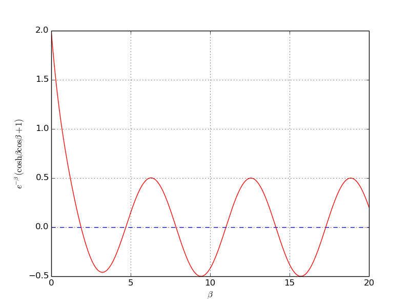

The purpose of this exercise is to understand when Newton's method works and fails. To this end, solve \( \tanh x=0 \) by Newton's method and study the intermediate details of the algorithm. Start with \( x_0=1.08 \). Plot the tangent in each iteration of Newton's method. Then repeat the calculations and the plotting when \( x_0=1.09 \). Explain what you observe.
The program may be written as:
which may be called from the script use_my_Newton_failure.m:
Note that Newton_failure.m calls the function plot_line (located in plot_line.m),
reading:
(The function plot_line is placed as a separate m-file so that it may be used also
by the function secant_failure, which is to be written in another exercise.)
Running the program with x set to \( 1.08 \) produces a series of plots (and prints) showing
the graph and the tangent for the present value of x. There are quite many
plots, so we do not show them here. However, the tangent line "jumps" around
a few times before it settles. In the final plot the tangent line goes through
the solution at \( x = 0 \). The final printout brings the information:
Number of function calls: 13
A solution is: 0.000024
When we run the program anew, this time with x set to \( 1.09 \), we get another series of
plots (and prints), but this time the tangent moves away from the (known) solution.
The final printout we get states that:
Number of function calls: 19
A solution is: nan
Here, nan stands for "not a number", meaning that we got no solution value for x.
That is, Newton's method diverged.
Filename: Newton_failure.*.
Does the secant method behave better than Newton's method in the problem described in Exercise 72: Understand why Newton's method can fail? Try the initial guesses
The program may be written as:
which may be called from the script use_my_secant_failure.m:
Note that, as with Newton_failure.m, the script plot_line.m is called for
plotting each tangent.
The script converges with the three first-mentioned alternatives for \( x_0 \) and \( x_1 \). With the final set of parameter values, the method diverges with a printout:
Error! - denominator zero for x = 360.600893792
and a few more lines stating that an exception error has occurred.
Filename: secant_failure.*.
Solve the same problem as in Exercise 72: Understand why Newton's method can fail, using the bisection method, but let the initial interval be \( [-5,3] \). Report how the interval containing the solution evolves during the iterations.
The code may be written as:
which may be called from the script use_my_bisection_nonfailure.m:
Running the program produces the following printout:
interval: [-1.000000, 3.000000]
interval: [-1.000000, 1.000000]
Number of function calls: 7
A solution is: 0.000000
Filename: bisection_nonfailure.*.
An attractive idea is to combine the reliability of the bisection method with the speed of Newton's method, even if the potential divergence with Newton's method then still is an issue. Such a combination is implemented by running the bisection method until we have a narrow interval, and then switch to Newton's method for speed.
Write a function that implements this idea. Start with an interval \( [a,b] \) and switch to Newton's method when the current interval in the bisection method is a fraction \( s \) of the initial interval (i.e., when the interval has length \( s(b-a) \)). The value of \( s \) must be given as an argument to the function, but it may have a default value of 0.1.
Try the new method on \( \tanh(x)=0 \) with an initial interval \( [-10,15] \).
The code may be written as:
which may be called from the script use_my_bisection_Newton.m:
Running the program produces the following printout:
A solution x = 0.000000 was reached in 7 iterations
Filename: bisection_Newton.m.
The purpose of this function is to verify the implementation of Newton's
method in the Newton function in the file nonlinear_solvers.py.
Construct an algebraic equation and perform two iterations of Newton's
method by
hand.
Find the corresponding size of \( |f(x)| \) and use this
as value for eps when calling Newton. The function should then
also perform two iterations and return the same approximation to
the root as you calculated manually. Implement this idea for a unit test
as a test function test_Newton().
Here is the complete module with the test function.
Filename: test_Newton.m.
An important engineering problem that arises in a lot of applications is the vibrations of a clamped beam where the other end is free. This problem can be analyzed analytically, but the calculations boil down to solving the following nonlinear algebraic equation: $$ \cosh\beta \cos\beta = -1,$$ where \( \beta \) is related to important beam parameters through $$ \beta^4 = \omega^2 \frac{\varrho A}{EI},$$ where \( \varrho \) is the density of the beam, \( A \) is the area of the cross section, \( E \) is Young's modulus, and \( I \) is the moment of the inertia of the cross section. The most important parameter of interest is \( \omega \), which is the frequency of the beam. We want to compute the frequencies of a vibrating steel beam with a rectangular cross section having width \( b=25 \) mm and height \( h=8 \) mm. The density of steel is \( 7850 \mbox{ kg/m}^3 \), and \( E= 2\cdot 10^{11} \) Pa. The moment of inertia of a rectangular cross section is \( I=bh^3/12 \).
a) Plot the equation to be solved so that one can inspect where the zero crossings occur.
When writing the equation as \( f(\beta)=0 \), the \( f \) function increases its amplitude dramatically with \( \beta \). It is therefore wise to look at an equation with damped amplitude, \( g(\beta) = e^{-\beta}f(\beta) = 0 \). Plot \( g \) instead.

b) Compute the first three frequencies.
Here is a complete program, using the Bisection method for root finding, based on intervals found from the plot above.
function beam_vib()
plot_f()
f_handle = @f;
% Set up suitable intervals
intervals = [1 3; 4 6; 7 9];
betas = []; % roots
for i = 1:length(intervals)
beta_L = intervals(i, 1); beta_R = intervals(i, 2);
[beta, it] = bisection(f_handle, beta_L, beta_R, eps=1E-6);
betas = [betas beta];
f(beta)
end
betas
% Find corresponding frequencies
function value = omega(beta, rho, A, E, I)
value = sqrt(beta^4/(rho*A/(E*I)));
end
rho = 7850; % kg/m^3
E = 1.0E+11; % Pa
b = 0.025; % m
h = 0.008; % m
A = b*h;
I = b*h^3/12;
for i = 1:length(betas)
omega(betas(i), rho, A, E, I)
end
end
function value = f(beta)
value = cosh(beta).*cos(beta) + 1;
end
function value = damped(beta)
% Damp the amplitude of f. It grows like cosh, i.e. exp.
value = exp(-beta).*f(beta);
end
function plot_f()
beta = linspace(0, 20, 501);
%y = f(x)
y = damped(beta);
plot(beta, y, 'r', [beta(1), beta(length(beta))], [1, 1], 'b--')
grid('on');
xlabel('beta');
ylabel('exp(-beta) (cosh(beta) cos(beta) +1)')
savefig('tmp1.png'); savefig('tmp1.pdf')
end
The output of \( \beta \) reads \( 1.875 \), \( 4.494 \), \( 7.855 \), and corresponding \( \omega \) values are \( 29 \), \( 182 \), and \( 509 \) Hz.
Filename: beam_vib.m.